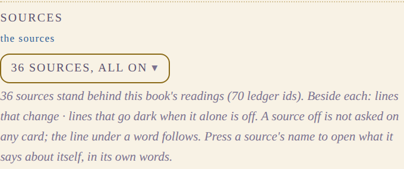
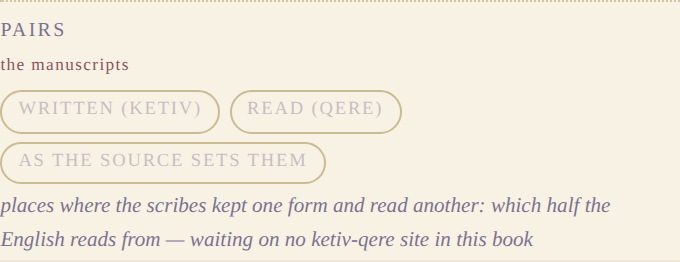
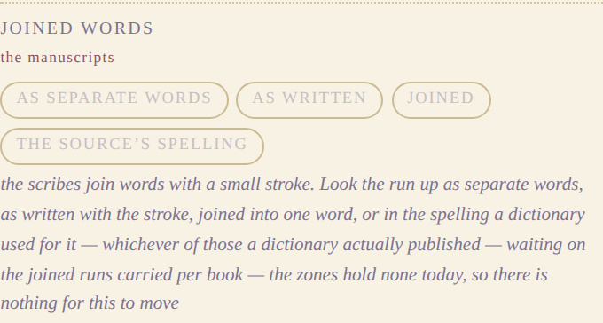
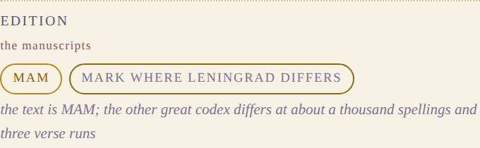
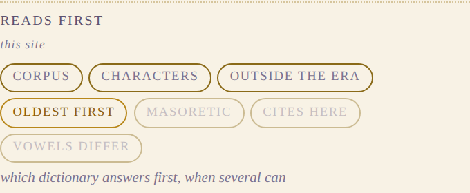
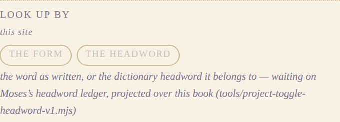
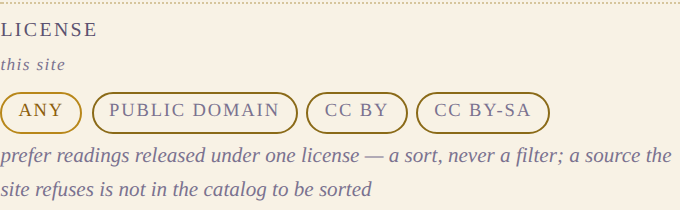
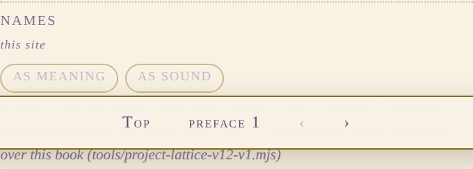
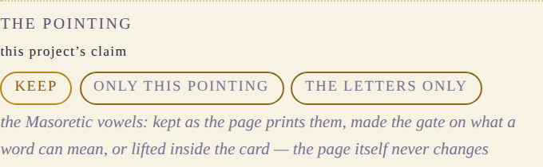

This site puts four things over a licensed text: the reading line under a word, the card that opens when you press one, this rail of switches, and the marks on words. Everything else you see is the text.
Those four are the only part of this site this project wrote. So they are the part worth arguing about.
The law over all of them: none of them writes on the Hebrew. The text is a floor, not a surface. Every switch here acts inside the card or in the space around the line, and the letters do not move when you press one.
And every control says whose statement it is, because a reader should never have to guess whether they are reading a dictionary's opinion, a scribe's mark, this site's arrangement, or a claim this project is making on its own account. The switches below are grouped that way and run in that order — least us to most us.
8 switches a reader can press today, and 1 drawn and dark. Each picture is the rail itself, photographed; this page holds no typed copy of any switch.
6 of 9 have their wording open. Where a switch is marked so, this lane is proposing different words and the ruling is the owner's. An accepted proposal is written into the reader and deleted from data/toggle-wording-proposals-v1.json, so that file empties as the language settles and its length is the size of what is still unsettled.
Someone else wrote these. Every one of them is a dictionary, and the switch decides which of them are asked — never what any of them said.

proposed instead
which dictionaries — every dictionary this book’s readings stand on. Turn one off and it is not asked; the card says what that withheld.
“sources” is our word for them; a reader knows what a dictionary is. Shorter, and drops the second clause that argued a position.
what a dictionary says about itself, in its own words
The scribes put these in the text. Nobody is interpreting anything: the switch decides which of two things the ink already carries the English follows.

proposed instead
written vs read — the scribes wrote one word and read another aloud. Which one the English follows.
“pairs” tells a reader nothing on its own. The why already avoided ketiv/qere, which was right; the label should do the same work.
something the text itself carries

it offers · as separate words · as written · joined · the source’s spelling
drawn, and dark. It waits on the joined runs carried per book — the zones hold none today, so there is nothing for this to move.
wording settled — this is what the rail says and what it should say.
something the text itself carries

it offers · MAM · mark where Leningrad differs
proposed instead
other manuscripts — this is one manuscript tradition. Another great copy spells about a thousand words differently. Mark where.
“MAM” is never expanded anywhere a reader can see it. “edition” also reads like a publisher’s edition rather than a manuscript.
something the text itself carries
These are ours, and they only ever move the order. Nothing is hidden by any of them, and no reading is added or taken away.

wording settled — this is what the rail says and what it should say.
how this site arranges what the sources said — an order, never a selection

it offers · the form · the headword
wording settled — this is what the rail says and what it should say.
how this site arranges what the sources said — an order, never a selection

it offers · any · public domain · CC BY · CC BY-SA
proposed instead
license — prefer readings a source released under one license. Nothing is hidden; only the order moves.
drops “a source the site refuses is not in the catalog to be sorted” — true, but it is us defending ourselves inside the interface rather than telling a reader what the switch does.
how this site arranges what the sources said — an order, never a selection

it offers · as meaning · as sound
proposed instead
names — a name can be answered with what it means, or with how it sounds.
drops “the lattice’s transliteration flag, the corpus lane’s rule”. Both are true and neither is a phrase a reader can hold; the provenance belongs in the record, not the label.
how this site arranges what the sources said — an order, never a selection
This one is a statement this project makes. It is the only switch here that is not somebody else's material, or our arrangement of it, and it is marked so a reader can refuse it.

it offers · keep · only this pointing · the letters only
proposed instead
the vowels — the marks the scribes added under the letters. Keep them, require them, or set them aside inside the card. The page never changes.
“the pointing” is the scribal term; “the vowels” is the owner’s own phrase for it (2026-09-19, “turn off the masoretic vowels”). Also drops “Masoretic”, which the row never defines.
a statement this project makes, not one a source made